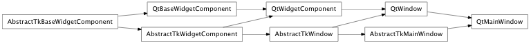
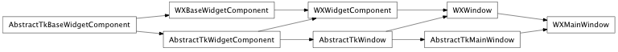

MainWindow¶
- class enaml.components.main_window.MainWindow[source]¶
Bases: enaml.components.window.Window
A top-level main window widget.
MainWindow widgets are top-level widgets which provide various frame decorations and other window related functionality. A window may optionally contain a menubar, any number of toolbars, a status bar, and dock panes. A window can have at most one central widget child which will be expanded to fit the available space of the window.
Sizing information relates to the size of the central widget rather than the overall size of the window. That is, specifying a minimum size for a MainWindow is akin to specifying a minimum size for the central widget. The space consumed by dock panes and menus is in addition to this space.
The menu bar for the window. This widget is automatically setup and destroyed when assigned to this attribute. Instances should therefore not be reused, but created on-the-fly as needed.
- dock_manager = None¶
The dock manager used for this main window.
- closed = None¶
An event which is fired when the window is closed.
- abstract_obj = None¶
Overridden parent class trait
- resize_to_initial()[source]¶
Overridden parent class method which resizes the window to the initial size according to the semantics required of a main window.
If the value of the ‘initial_size’ attribute is (-1, -1), then the initiali size of the window is determined by using the size hint of the central widget. Otherwise, the given ‘initial_size’ is used.
- Note: If any dock panels or toolbars are in use, then this
- computed initial size will likely be smaller than the allowable minimum size, and therefore the minimum size will end up being the initial size. This is usually the desired behavior. If the off chance that it isn’t then manually specifying an initial size and a minimum size is sufficient to override the default behavior.
- update_minimum_size()[source]¶
Overridden parent class method which updates the minimum size according the semantics required for a main window.
If the value of the ‘minimum_size’ attribute is (-1, -1), then the minimum size of the window is indirectly using the minimum size of the central widget. That is, the minimum size of the main window will be large enough to accomodate the minimum size of the central widget plus whatever dock panels, menu bars, and tool bars are in use. If the ‘minimum_size’ attribute is set to something other than (-1, -1), then that value will be used as the minimum size for the entire window, without regard to any dock panels etc. that are in use. The default behavior is usually what is desired in most applications.
- Note: The minimum size computation for a MainWindow does not
- make use of the ‘minimum_size_default’ attribute.
- resize_to_minimum()[source]¶
Overridden parent class method which resizes the window to the minimum size, respecting the semantics of a main window.
- update_maximum_size()[source]¶
Overridden parent class method which updates the maximum size according the semantics required for a main window.
If the value of the ‘maximum_size’ attribute is (-1, -1), then the maximum size of the window is limits allowed by most GUI toolkits. That is, the maximum size of the central widget is ignored, and it will be expanded to fit the available space in the window. This is distinctly different from the maximum size computation in a Window, where the maximum size of the central widget is respected. Respecting this max size in a MainWindow is not supported since it would lead to unituitive interactions between the sizing of the central widget and any dock panels that are in use.
- Note: The maximum size computation for a MainWindow does not
- make use of the ‘minimum_size_default’ attribute.
- resize_to_maximum()[source]¶
Overridden parent class method which resizes the window to the maximum size, respecting the semantics of a main window.
- __implements__¶
alias of __NoInterface__
Backends¶
Qt¶

- class enaml.backends.qt.qt_main_window.QtMainWindow[source]¶
Bases: enaml.backends.qt.qt_window.QtWindow, enaml.components.main_window.AbstractTkMainWindow
A Qt implementation of a MainWindow.
The change handler for the ‘menu_bar’ attribute on the shell object.
Updates the menu bar in the main window with the given Enaml MenuBar instance.
Wx¶

- class enaml.backends.wx.wx_main_window.WXMainWindow[source]¶
Bases: enaml.backends.wx.wx_window.WXWindow, enaml.components.main_window.AbstractTkMainWindow
A Wx implementation of a MainWindow.
Update the menu bar of the window with the new value from the shell object.
- set_central_widget(central_widget)[source]¶
Sets the central widget in the window with the given value.
Updates the menu bar in the main window with the given Enaml MenuBar instance.